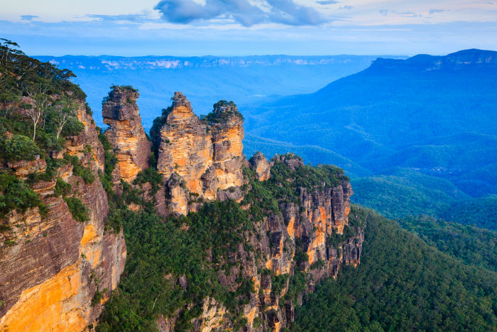

Arcadia trees, which grow all over the African savannah, have a unique defense system.
An extinct species of penguins was nearly 7-feet tall!
Did you know?
Here is a quote from FActs.Net Website
The deadliest weather condition is considered heat.
Scientists have discovered that in the past 30 years, the most extreme type of weather condition is heat.
However, floods, hurricanes, and storms are considered to be the most destructive form of weather conditions.

The Three Sisters, Blue Mountains, NSW, Australia
According to "Blue Mountains Australia.com", "The Blue Mountains is a magical place any time of the year. Glowing in autumn, cool in winter, colourful in spring
and refreshing in summer. The Blue Mountains is densely populated by oil bearing Eucalyptus trees."